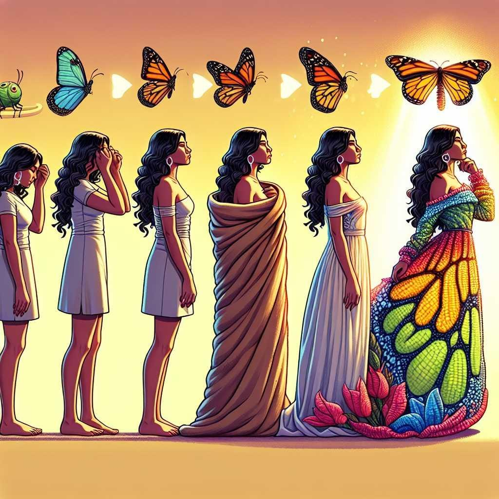

Acompañamiento 1:1
Acompañamiento consciente para quien desea comprender su historia, transformar sus patrones .
y reencontrarse consigo mism@s.
Un proceso respetuoso y personalizado que integra herramientas terapéuticas, reflexión profunda y acompañamiento humano.
- Sesiones individuales online
- Sin juicios ni etiquetas
- A tu ritmo

Mi enfoque
No se trata de una terapia más.
"Acompañar no es dar respuestas ni señalar el camino. Es crear un espacio donde puedas ver con mayor claridad lo que estás viviendo, reconocer lo que se repite y encontrar tus propias respuestas.".
Las herramientas las vamos eligiendo juntas, según lo que el proceso vaya pidiendo. Tú traes tu historia y lo que estás viviendo. Yo traigo la escucha, la mirada y el espacio. Es un camino que hacemos a dos, a tu ritmo.
Cómo trabajamos · El proceso de transformación
Cuatro movimientos que se repiten, profundizan y renuevan a lo largo de todo el acompañamiento.
Exploramos lo que no se ve a simple vista: los bloqueos invisibles, el cansancio sin explicación y las emociones que habitan en tu rutina.
Escuchar
Comprender el momento que estás atravesando sin juicio ni prisa.
Reconocer
Identificar patrones, creencias y dinámicas presentes en tu historia.
Integrar
Dar sentido a la experiencia y conectar lo vivido con lo que quieres.
Transformar
Avanzar con nuevas herramientas, perspectivas y mayor claridad interior.
Tres maneras de acompañarte
Elige cómo deseas comenzar
Todo proceso comienza con una Conversación de Sintonía de 30 minutos, gratuita y sin compromiso. Un espacio para conocernos y descubrir si este acompañamiento es para ti.
Conversación de Sintonía
Gratuita y sin compromiso.
1 sesión · 75 minEncuentro Alquímico
Cuando algo dentro de ti pide ser escuchado
Hay momentos en que sentimos que algo necesita atención, aunque no sepamos exactamente qué. Es una sesión individual donde nos detenemos a observar con profundidad aquello que hoy está buscando ser visto, comprendido o transformado.
En este encuentro encontrarás
- 75 minutos de acompañamiento individual online
- Exploración de tu momento actual
- Orientación personalizada al cierre
- Herramientas terapéuticas según el proceso
3 encuentrosProceso de Transformación
Para aquello que sigue llamando tu atención una y otra vez
Hay experiencias que no llegan para ser comprendidas en una sola conversación. Patrones que se repiten. Conflictos que conservan la misma raíz. Aquí trabajamos con mayor profundidad aquello que busca ser comprendido, liberado o integrado.
Durante este proceso contarás con
- 3 encuentros individuales online
- Acompañamiento personalizado entre sesiones
- Propuestas de integración y reflexión
- Síntesis final del recorrido realizado
6 encuentrosCamino de Integración Alquímica
Cuando la transformación necesita tiempo, presencia y sostén
Existen etapas que marcan un antes y un después. Este proceso de acompañamiento profundo está diseñado para sostener esos períodos de transformación. No busca acelerarte ni corregirte: busca acompañarte mientras integras lo que estás viviendo.
Durante este camino contarás con
- 6 encuentros individuales online
- Seguimiento y acompañamiento entre sesiones
- Material de integración y reflexión
- Bitácora Atemporal incluida
- Síntesis final del proceso
¿No sabes cuál elegir? Comienza con la conversación gratuita y lo reconocemos juntas.

Continuidad de tu proceso
Bitácora Atemporal
Puede ser parte de la continuidad de tus procesos: un recorrido individual, acompañada por cuatro diosas.
Conocer la Bitácora →Experiencias reales
Lo que dicen quienes
ya comenzaron
“El espacio que crea Jeanett es único: seguro, cálido y sin juicios. Por primera vez sentí que podía ser honesta conmigo misma y trabajar desde ahí.”
Valentina R. · Encuentro Alquímico 1:1“Las herramientas que aprendí las uso cada día. No solo entendí cómo funciona la energía en mi cuerpo, sino que aprendí a cuidarla y a escucharme.”
Adriana L. · Proceso de transformaciónTestimonios reales; los nombres fueron modificados para proteger la privacidad.
Cuando estés lista
El cambio comienza cuando decides escucharte
Si sientes que ha llegado el momento de comprender lo que estás viviendo y avanzar con mayor claridad, estaré encantada de acompañarte.
Agendar conversación →